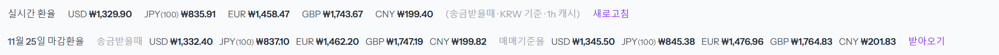
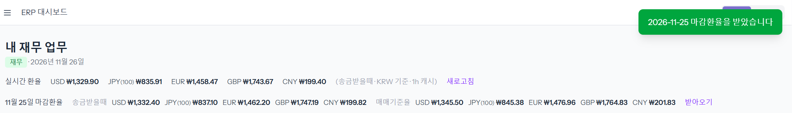

업무 대시보드 맨 위에 「실시간 환율」과 함께 직전 영업일의 마감환율이 나옵니다. 오늘이 11월 26일이면 「11월 25일 마감환율」입니다. 송금받을때와 매매기준율 두 가지를 보여 주고, 12월부터 판매잔금 환율을 자동으로 적을 때 쓰는 값과 같습니다.
① 어디서 보나
1단계
대시보드 → 「실시간 환율」 줄 바로 아래 「○월 ○일 마감환율」 줄
앞쪽이 송금받을때, 뒤쪽이 매매기준율입니다. 통화는 USD · JPY(100엔당) · EUR · GBP · CNY 순입니다. 제목의 날짜가 어느 날 마감인지입니다.

- 실시간 환율 줄이 있는 화면(담당 영업 · 재무 · 관리 뷰)에서 보입니다.
- 주말 · 공휴일에는 마감이 없어서 그 전 영업일 값이 나옵니다(월요일이면 금요일 마감).
② 비어 있거나 날짜가 하루 늦을 때 — [받아오기]
2단계
줄 끝의 [받아오기] → 「○○ 마감환율을 받았습니다」
마감환율은 매일 자동으로 받습니다. 보통 오전 9시에 전날 값이 들어오므로, 그 전에는 하루 전 마감이 보이거나 「⚠ 직전 영업일 마감이 아직 없습니다」가 뜰 수 있습니다. 그때 [받아오기]를 누르면 다시 받아 옵니다.

- [받아오기]는 재무 이상(재무 · 관리 · 업무관리자 · 최고관리자)에게만 보입니다.
- 아직 은행 고시가 올라오지 않았으면 「아직 새 마감이 없습니다 — 지금은 ○○ 마감이 최신입니다」가 뜹니다. 9시 이후에 다시 누르면 됩니다.
- [받아오기]는 환율 값만 저장합니다. 차량 · 입금 기록은 바뀌지 않습니다.
알아 둘 것
- 「실시간 환율」은 지금 이 순간 값(1시간마다 갱신)이고, 「마감환율」은 그날 은행이 확정한 값입니다. 판매잔금 환율을 자동으로 적는 기능(12월 시작 예정)이 켜지면 그때 쓰는 값이 마감환율입니다.
- 공휴일 다음 날에는 「아직 없습니다」가 떠도 정상입니다 — 공휴일에는 마감이 없습니다.